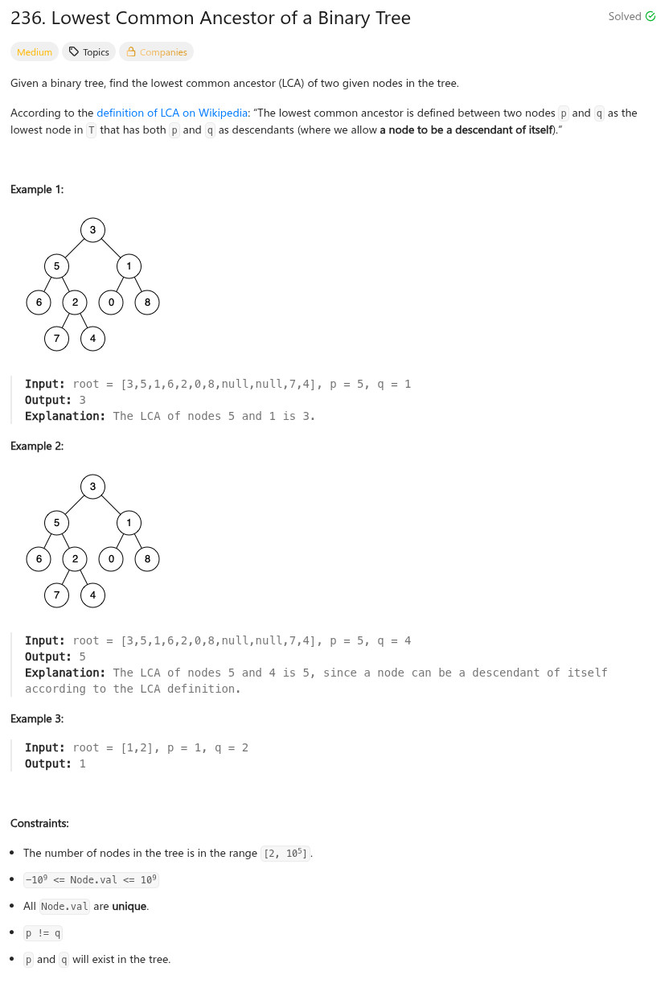

參考資訊：
https://www.cnblogs.com/grandyang/p/4641968.html
題目：

/**
* Definition for a binary tree node.
* struct TreeNode {
* int val;
* TreeNode *left;
* TreeNode *right;
* TreeNode(int x) : val(x), left(NULL), right(NULL) {}
* };
*/
class Solution {
public:
TreeNode* lowestCommonAncestor(TreeNode* root, TreeNode* p, TreeNode* q) {
if (!root || (root->val == p->val) || (root->val == q->val)) {
return root;
}
TreeNode *l = lowestCommonAncestor(root->left, p, q);
TreeNode *r = lowestCommonAncestor(root->right, p, q);
if (l && r) {
return root;
}
return l ? l : r;
}
};